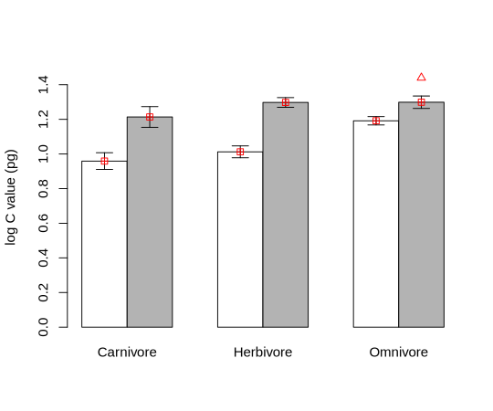
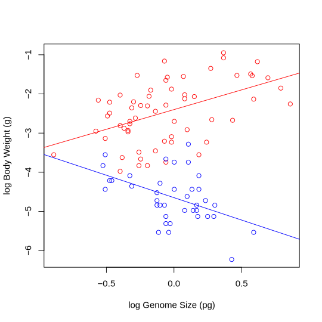
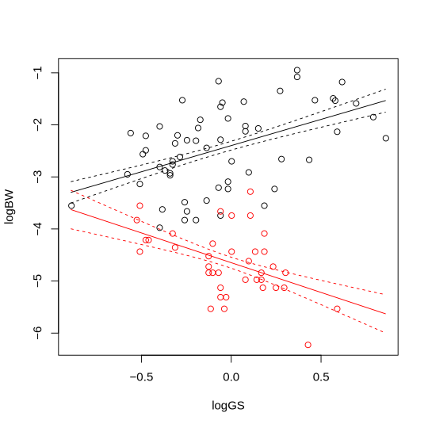

Linear Models: Multiple variables with interactions
Contents
Linear Models: Multiple variables with interactions#
Introduction#
Here you will build on your skills in fitting linear models with multiple explanatory variables to data. You will learn about another commonly used Linear Model fitting technique: ANCOVA.
We will build two models in this chapter:
Model 1: Is mammalian genome size predicted by interactions between trophic level and whether species are ground dwelling?
ANCOVA: Is body size in Odonata predicted by interactions between genome size and taxonomic suborder?
So far, we have only looked at the independent effects of variables. For example, in the trophic level and ground dwelling model from the first multiple explanatory variables chapter, we only looked for specific differences for being a omnivore or being ground dwelling, not for being specifically a ground dwelling omnivore. These independent effects of a variable are known as main effects and the effects of combinations of variables acting together are known as interactions — they describe how the variables interact.
Chapter aims#
The aims of this chapter are\(^{[1]}\):
Creating more complex Linear Models with multiple explanatory variables
Including the effects of interactions between multiple variables in a linear model
Plotting predictions from more complex (multiple explanatory variables) linear models
Formulae with interactions in R#
We’ve already seen a number of different model formulae in R. They all use this syntax:
response variable ~ explanatory variable(s)
But we are now going to see two extra pieces of syntax:
y ~ a + b + a:b: Thea:bmeans the interaction betweenaandb— do combinations of these variables lead to different outcomes?y ~ a * b: This a shorthand for the model above. The means fitaandbas main effects and their interactiona:b.
Model 1: Mammalian genome size#
\(\star\) Make sure you have changed the working directory to Code in your stats coursework directory.
\(\star\) Create a new blank script called ‘Interactions.R’ and add some introductory comments.
\(\star\) Load the data:
load('../data/mammals.Rdata')
If mammals.Rdata is missing, just import the data again using read.csv. You will then have to add the log C Value column to the imported data frame again.
Let’s refit the model from the first multiple explanatory variables chapter, but including the interaction between trophic level and ground dwelling. We’ll immediately check the model is appropriate:
model <- lm(logCvalue ~ TrophicLevel * GroundDwelling, data= mammals)
par(mfrow=c(2,2), mar=c(3,3,1,1), mgp=c(2, 0.8,0))
plot(model)
Now, examine the anova and summary outputs for the model:
anova(model)
| Df | Sum Sq | Mean Sq | F value | Pr(>F) | |
|---|---|---|---|---|---|
| TrophicLevel | 2 | 0.8141063 | 0.40705316 | 8.061439 | 4.036387e-04 |
| GroundDwelling | 1 | 2.7469218 | 2.74692183 | 54.401106 | 2.335706e-12 |
| TrophicLevel:GroundDwelling | 2 | 0.4312875 | 0.21564376 | 4.270693 | 1.499280e-02 |
| Residuals | 253 | 12.7749466 | 0.05049386 | NA | NA |
Compared to the model from the first multiple explanatory variables chapter, there is an extra line at the bottom. The top two are the same and show that trophic level and ground dwelling both have independent main effects. The extra line shows that there is also an interaction between the two. It doesn’t explain a huge amount of variation, about half as much as trophic level, but it is significant.
Again, we can calculate the \(r^2\) for the model:
\(\frac{0.81 + 2.75 + 0.43}{0.81+2.75+0.43+12.77} = 0.238\)
The model from the first multiple explanatory variables chapter without the interaction had an \(r^2 = 0.212\) — our new model explains 2.6% more of the variation in the data.
The summary table is as follows:
summary(model)
Call:
lm(formula = logCvalue ~ TrophicLevel * GroundDwelling, data = mammals)
Residuals:
Min 1Q Median 3Q Max
-0.52294 -0.17069 -0.01003 0.11920 0.83057
Coefficients:
Estimate Std. Error t value Pr(>|t|)
(Intercept) 0.95895 0.04407 21.760 < 2e-16
TrophicLevelHerbivore 0.05351 0.05535 0.967 0.334605
TrophicLevelOmnivore 0.23281 0.05226 4.455 1.26e-05
GroundDwellingYes 0.25487 0.06509 3.915 0.000116
TrophicLevelHerbivore:GroundDwellingYes 0.03033 0.07857 0.386 0.699791
TrophicLevelOmnivore:GroundDwellingYes -0.14761 0.07930 -1.861 0.063839
(Intercept) ***
TrophicLevelHerbivore
TrophicLevelOmnivore ***
GroundDwellingYes ***
TrophicLevelHerbivore:GroundDwellingYes
TrophicLevelOmnivore:GroundDwellingYes .
---
Signif. codes: 0 ‘***’ 0.001 ‘**’ 0.01 ‘*’ 0.05 ‘.’ 0.1 ‘ ’ 1
Residual standard error: 0.2247 on 253 degrees of freedom
(120 observations deleted due to missingness)
Multiple R-squared: 0.2381, Adjusted R-squared: 0.223
F-statistic: 15.81 on 5 and 253 DF, p-value: 1.504e-13
The lines in this output are:
The reference level (intercept) for non ground dwelling carnivores. (The reference level is decided just by the alphabetic order of the levels)
Two differences for being in different trophic levels.
One difference for being ground dwelling
Two new differences that give specific differences for ground dwelling herbivores and omnivores.
The first four lines, as in the model from the ANOVA chapter, which would allow us to find the predicted values for each group if the size of the differences did not vary between levels because of the interactions. That is, this part of the model only includes a single difference ground and non-ground species, which has to be the same for each trophic group because it ignores interactions between trophic level and ground / non-ground identity of each species. The last two lines then give the estimated coefficients associated with the interaction terms, and allow cause the size of differences to vary between levels because of the further effects of interactions.
The table below show how these combine to give the predictions for each group combination, with those two new lines show in red:
Not ground |
Ground |
|
|---|---|---|
Carnivore |
0.96 = 0.96 |
0.96 + 0.25 = 1.21 |
Herbivore |
0.96 + 0.05 = 1.01 |
0.96 + 0.05 + 0.25 + 0.03 = 1.29 |
Omnivore |
0.96 + 0.23 = 1.19 |
0.96 + 0.23 + 0.25 - 0.15 = 1.29 |
So why are there two new coefficients? For interactions between two factors, there are always \((n-1)\times(m-1)\) new coefficients, where \(n\) and \(m\) are the number of levels in the two factors (Ground dwelling or not: 2 levels and trophic level: 3 levels, in our current example). So in this model, \((3-1) \times (2-1) =2\). It might be easier to understand why graphically:

The prediction for the white boxes above can be found by adding the main effects together but for the grey boxes, we need to find specific differences. So there are \((n-1)\times(m-1)\) interaction coefficients (count the number of grey boxes) to add.
If we put this together, what is the model telling us?
Herbivores have the same genome sizes as carnivores, but omnivores have larger genomes.
Ground dwelling mammals have larger genomes.
These two findings suggest that ground dwelling omnivores should have extra big genomes. However, the interaction shows they are smaller than expected and are, in fact, similar to ground dwelling herbivores.
Note that although the interaction term in the anova output is significant, neither of the two coefficients in the summary has a \(p<0.05\). There are two weak differences (one
very weak, one nearly significant) that together explain significant
variance in the data.
\(\star\) Copy the code above into your script and run the model.
Make sure you understand the output!
Just to make sure the sums above are correct, we’ll use the same code as in the first multiple explanatory variables chapter to get R to calculate predictions for us, similar to the way we did before:
# a data frame of combinations of variables
gd <- rep(levels(mammals$GroundDwelling), times = 3)
print(gd)
[1] "No" "Yes" "No" "Yes" "No" "Yes"
tl <- rep(levels(mammals$TrophicLevel), each = 2)
print(tl)
[1] "Carnivore" "Carnivore" "Herbivore" "Herbivore" "Omnivore" "Omnivore"
Again, remember that the each = 2 option repeats each value twice in succession; the times = 3 options repeats the whole set of values (the whole vector) three times.
# New data frame
predVals <- data.frame(GroundDwelling = gd, TrophicLevel = tl)
# predict using the new data frame
predVals$predict <- predict(model, newdata = predVals)
print(predVals)
GroundDwelling TrophicLevel predict
1 No Carnivore 0.9589465
2 Yes Carnivore 1.2138170
3 No Herbivore 1.0124594
4 Yes Herbivore 1.2976624
5 No Omnivore 1.1917603
6 Yes Omnivore 1.2990165
\(\star\) Include and run the code for gererating these predictions in your script.
If we plot these data points onto the barplot from the first multiple explanatory variables chapter, they now lie exactly on the mean values, because we’ve allowed for interactions. The triangle on this plot shows the predictions for ground dwelling omnivores from the main effects (\(0.96 + 0.23 + 0.25 = 1.44\)), the interaction of \(-0.15\) pushes the prediction back down.

Model 2 (ANCOVA): Body Weight in Odonata#
We’ll go all the way back to the regression analyses from the Regression chapter. Remember that we fitted two separate regression lines to the data for damselflies and dragonflies. We’ll now use an interaction to fit these in a single model. This kind of linear model — with a mixture of continuous variables and factors — is often called an analysis of covariance, or ANCOVA. That is, ANCOVA is a type of linear model that blends ANOVA and regression. ANCOVA evaluates whether population means of a dependent variable are equal across levels of a categorical independent variable, while statistically controlling for the effects of other continuous variables that are not of primary interest, known as covariates.
Thus, ANCOVA is a linear model with one categorical and one or more continuous predictors.
We will use the odonates data that we have worked with before.
\(\star\) First load the data:
odonata <- read.csv('../data/GenomeSize.csv')
\(\star\) Now create two new variables in the odonata data set called logGS and logBW containing log genome size and log body weight:
odonata$logGS <- log(odonata$GenomeSize)
odonata$logBW <- log(odonata$BodyWeight)
The models we fitted before looked like this:

We can now fit the model of body weight as a function of both genome size and suborder:
odonModel <- lm(logBW ~ logGS * Suborder, data = odonata)
summary(odonModel)
Call:
lm(formula = logBW ~ logGS * Suborder, data = odonata)
Residuals:
Min 1Q Median 3Q Max
-1.3243 -0.3225 0.0073 0.3962 1.4976
Coefficients:
Estimate Std. Error t value Pr(>|t|)
(Intercept) -2.39947 0.08475 -28.311 < 2e-16 ***
logGS 1.00522 0.22367 4.494 1.99e-05 ***
SuborderZygoptera -2.24895 0.13540 -16.610 < 2e-16 ***
logGS:SuborderZygoptera -2.14919 0.46186 -4.653 1.07e-05 ***
---
Signif. codes: 0 ‘***’ 0.001 ‘**’ 0.01 ‘*’ 0.05 ‘.’ 0.1 ‘ ’ 1
Residual standard error: 0.6499 on 94 degrees of freedom
(2 observations deleted due to missingness)
Multiple R-squared: 0.7549, Adjusted R-squared: 0.7471
F-statistic: 96.5 on 3 and 94 DF, p-value: < 2.2e-16
Again, we’ll look at the anova table first:
anova(odonModel)
| Df | Sum Sq | Mean Sq | F value | Pr(>F) | |
|---|---|---|---|---|---|
| logGS | 1 | 1.144458 | 1.1444583 | 2.710007 | 1.030601e-01 |
| Suborder | 1 | 111.967748 | 111.9677481 | 265.132794 | 4.154783e-29 |
| logGS:Suborder | 1 | 9.144522 | 9.1445216 | 21.653669 | 1.068365e-05 |
| Residuals | 94 | 39.696969 | 0.4223082 | NA | NA |
Interpreting this:
There is no significant main effect of log genome size. The main effect is the important thing here — genome size is hugely important but does very different things for the two different suborders. If we ignored
Suborder, there isn’t an overall relationship: the average of those two lines is pretty much flat.There is a very strong main effect of Suborder: the mean body weight in the two groups are very different.
There is a strong interaction between suborder and genome size. This is an interaction between a factor and a continuous variable and shows that the slopes are different for the different factor levels.
Now for the summary table:
summary(odonModel)
Call:
lm(formula = logBW ~ logGS * Suborder, data = odonata)
Residuals:
Min 1Q Median 3Q Max
-1.3243 -0.3225 0.0073 0.3962 1.4976
Coefficients:
Estimate Std. Error t value Pr(>|t|)
(Intercept) -2.39947 0.08475 -28.311 < 2e-16 ***
logGS 1.00522 0.22367 4.494 1.99e-05 ***
SuborderZygoptera -2.24895 0.13540 -16.610 < 2e-16 ***
logGS:SuborderZygoptera -2.14919 0.46186 -4.653 1.07e-05 ***
---
Signif. codes: 0 ‘***’ 0.001 ‘**’ 0.01 ‘*’ 0.05 ‘.’ 0.1 ‘ ’ 1
Residual standard error: 0.6499 on 94 degrees of freedom
(2 observations deleted due to missingness)
Multiple R-squared: 0.7549, Adjusted R-squared: 0.7471
F-statistic: 96.5 on 3 and 94 DF, p-value: < 2.2e-16
The first thing to note is that the \(r^2\) value is really high. The model explains three quarters (0.752) of the variation in the data.
Next, there are four coefficients:
The intercept is for the first level of
Suborder, which is Anisoptera (dragonflies).The next line, for
log genome size, is the slope for Anisoptera.We then have a coefficient for the second level of
Suborder, which is Zygoptera (damselflies). As with the first model, this difference in factor levels is a difference in mean values and shows the difference in the intercept for Zygoptera.The last line is the interaction between
SuborderandlogGS. This shows how the slope for Zygoptera differs from the slope for Anisoptera.
How do these hang together to give the two lines shown in the model? We can calculate these by hand:
\(\star\) Add the above code into your script and check that you understand the outputs.
We’ll use the predict function again to get the predicted values from the model and add lines to the plot above.
First, we’ll create a set of numbers spanning the range of genome size:
#get the range of the data:
rng <- range(odonata$logGS)
#get a sequence from the min to the max with 100 equally spaced values:
LogGSForFitting <- seq(rng[1], rng[2], length = 100)
Have a look at these numbers:
print(LogGSForFitting)
[1] -0.891598119 -0.873918728 -0.856239337 -0.838559945 -0.820880554
[6] -0.803201163 -0.785521772 -0.767842380 -0.750162989 -0.732483598
[11] -0.714804206 -0.697124815 -0.679445424 -0.661766032 -0.644086641
[16] -0.626407250 -0.608727859 -0.591048467 -0.573369076 -0.555689685
[21] -0.538010293 -0.520330902 -0.502651511 -0.484972119 -0.467292728
[26] -0.449613337 -0.431933946 -0.414254554 -0.396575163 -0.378895772
[31] -0.361216380 -0.343536989 -0.325857598 -0.308178207 -0.290498815
[36] -0.272819424 -0.255140033 -0.237460641 -0.219781250 -0.202101859
[41] -0.184422467 -0.166743076 -0.149063685 -0.131384294 -0.113704902
[46] -0.096025511 -0.078346120 -0.060666728 -0.042987337 -0.025307946
[51] -0.007628554 0.010050837 0.027730228 0.045409619 0.063089011
[56] 0.080768402 0.098447793 0.116127185 0.133806576 0.151485967
[61] 0.169165358 0.186844750 0.204524141 0.222203532 0.239882924
[66] 0.257562315 0.275241706 0.292921098 0.310600489 0.328279880
[71] 0.345959271 0.363638663 0.381318054 0.398997445 0.416676837
[76] 0.434356228 0.452035619 0.469715011 0.487394402 0.505073793
[81] 0.522753184 0.540432576 0.558111967 0.575791358 0.593470750
[86] 0.611150141 0.628829532 0.646508923 0.664188315 0.681867706
[91] 0.699547097 0.717226489 0.734905880 0.752585271 0.770264663
[96] 0.787944054 0.805623445 0.823302836 0.840982228 0.858661619
We can now use the model to predict the values of body weight at each of those points for each of the two suborders:
#get a data frame of new data for the order
ZygoVals <- data.frame(logGS = LogGSForFitting, Suborder = "Zygoptera")
#get the predictions and standard error
ZygoPred <- predict(odonModel, newdata = ZygoVals, se.fit = TRUE)
#repeat for anisoptera
AnisoVals <- data.frame(logGS = LogGSForFitting, Suborder = "Anisoptera")
AnisoPred <- predict(odonModel, newdata = AnisoVals, se.fit = TRUE)
We’ve added se.fit=TRUE to the function to get the standard error around the regression lines. Both AnisoPred and ZygoPred contain predicted values (called fit) and standard error values (called se.fit) for each of the values in our generated values in LogGSForFitting for each of the two suborders.
We can add the predictions onto a plot like this:
# plot the scatterplot of the data
plot(logBW ~ logGS, data = odonata, col = Suborder)
# add the predicted lines
lines(AnisoPred$fit ~ LogGSForFitting, col = "black")
lines(AnisoPred$fit + AnisoPred$se.fit ~ LogGSForFitting, col = "black", lty = 2)
lines(AnisoPred$fit - AnisoPred$se.fit ~ LogGSForFitting, col = "black", lty = 2)

\(\star\) Copy the prediction code into your script and run the plot above.
Copy and modify the last three lines to add the lines for the Zygoptera. Your final plot should look like this:
